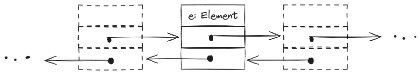

2 Lists
2.1 Sequences as Arrays and Lists
Many terms for same thing: sequence, field, list, stack, string, file… Yes, files are simply sequences of bytes!
three views on lists:
- abstract: \((2, 3, 5, 7)\)
- functionality: stack, queue, etc… What operations does it support?
- representation: How is the list represented in a given programming model/language/paradigm?
2.2 Applications of Lists
- Storing and processing any kinds of data
- Concrete representation of abstract data types such as: set, graph, etc…
2.3 Linked and Doubly Linked Lists
| simply linked | doubly linked | |
|---|---|---|
| lecture | SList |
List |
| c++ | std::forward_list |
std::list |
Doubly linked lists are usually simpler and require “only” double the space at most. Therefore their use is more widespread.
List Items
Class Item of T :=
e: T //Data item of type T
next: *Item //Pointer to Item
prev: *Item //Pointer to Item
invariant next->prev = this = prev->next
Problem: * predeccessor of first list element? * successor of last list element?
Solution: Dummy Item with an empty data field as follows:
Advatanges of this solution:
- Invariant is always satisfied
- Exceptions are avoided, thus making the coding more:
- simple
- readable
- faster
- elegant
Disadvantages: a little more storage space.
The List Class
Class List of T :=
dummy := (
Null : T
&dummy : *T // initially list is empty, therefore next points to the dummy itself
&dummy : *T // initially list is empty, therefore prev points to the dummy itself
) : Item
// returns the address of the dummy, which represents the head of the list
Function head() : *Item :=
return address of dummy
// simple access functions
// returns true iff list empty
Function is_empty() : Bool :=
return dummy.next == dummy
// returns pointer to first Item of the list, given list is not empty
Function first() : *Item :=
assert (not is_empty())
return dummy.next
// returns pointer to last Item of the list, given list is not empty
Function last() : *Item :=
assert (not is_empty())
return dummy.prev
/* Splice is an all-purpose tool to cut out parts from a list
Cut out (a, ... b) form this list and insert after t */
Procedure splice(a, b, t : *Item) :=
assert (
b is not before a
and
t not between a and b
)
// Cut out (a, ... , b)
a->prev->next := b->next
b->next->prev := a->prev
// insert (a, ... b) after t
t->next->prev := b
b->next := t->next
t->next := a
a->prev := t
// Moving items by utilising splice
//Move item a after item b
Procedure move_after(a, b: *Item) :=
splice(a, a, b)
// Move item a to the front of the list
Procedure move_to_front(a: *Item) :=
move_after(a, dummy)
Procedure move_to_back(a: *Item) :=
move_after(b, last())
// Deleting items by moving them to a global freeList
// remove item a
Procedure remove(a: *Item) :=
move_after(b, freeList.dummy)
// remove first item
Procedure pop_front() :=
remove(first())
//remove last item
Procedure pop_back() :=
remove(last())
// Inserting Elements
// Insert an item with value x after item a
Function insert_after(x : T, a : *Item) : *Item :=
checkFreeList() //make sure freeList is non empty
b := freeList.first() // obtain an item b to hold x
move_after(b, a) // insert b after a
b->e := x // set the data item value of b to x
return b
// Manipulating whole lists
Procedure concat(L : List) :=
splice(L.first(), L.last(), last()) //move whole of L after last element of this list
Procedure clear()
freeList.concat(this) //after this operation from from first to last element of this
// list are concatenated to the freeList, leaving only the
// dummy element in this list.
Fuction get(i )
Splicing
The code for splicing of the List class:
/* Splice is an all-purpose tool to cut out parts from a list
Cut out (a, ... b) form this list and insert after t */
Procedure splice(a, b, t : *Item) :=
assert (
b is not before a
and
t not between a and b
)
// Cut out (a, ... , b)
a->prev->next := b->next
b->next->prev := a->prev
// insert (a, ... b) after t
t->next->prev := b
b->next := t->next
t->next := a
a->prev := t- Dlist cut-out \((a,...,b)\) (see Figure 2.1):
- Dlist insert \((a,...,b)\) after \(t\) (see Figure 2.2):
Speicherverwaltung ./.FreeList
Methods (?):
- Niavely: allocate memory for each new element, deallocate memory after deleting each element:
- advantage: simplicity
- disadvantage: requires a good implementation of memory management: potentially very slow
- “global”
freeList(e.g.staticmember in C++)- doubly linked list of all not used elements
- transfer ‘deleted’ elements in
freeList. checkFreeListallocates, in case the list is empty
Real implementations: * naiv but with well implemented, efficient memory management * refined Free List Approach (class-agnostic, release) * implementation-specific.
Deleting Elements
Deleting elements realised by moving them to the global freeList:
Procedure remove(a: *Item) :=
move_after(a, freeList.dummy) // item a is now a 'free' item.
Procedure pop_front() :=
remove(first())
Procedure pop_back() :=
remove(last())Inserting Elements
Inserting elements into a list \(l\) also utilizes freeList, by fetching its first element an moving it into \(l\).
Function insert_after(x : T, a : *Item) : *Item :=
checkFreeList() //make sure freeList is non empty
b := freeList.first() // obtain an item b to hold x
move_after(b, a) // insert b after a
b->e := x // set the data item value of b to x
return b
Function insert_before(x : T, b : *Item) : *Item :=
return insert_after(x, b->prev)
Procedure push_front(x : T) :=
insert_after(x, dummy)
Procedure push_back(x : T) :=
insert_after(x, last())Manipulating whole Lists
// Manipulating whole lists
Procedure concat(L : List) :=
splice(L.first(), L.last(), last()) //move whole of L after last element of this list
Procedure clear()
freeList.concat(this) //after this operation from from first to last element of this
// list are concatenated to the freeList, leaving only the
// dummy element in this list.This operations require constant time - indeendent of the list size!